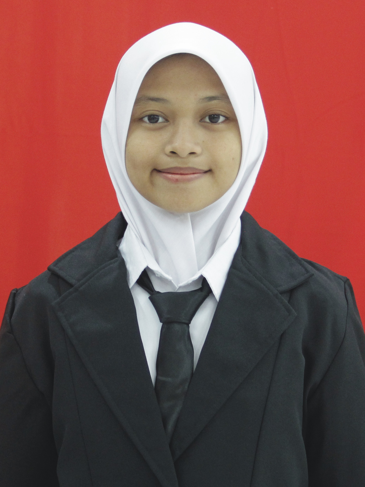

Mahasiswi S1 Sains Data Semester 5 Telkom University Surabaya. Berfokus pada Applied Machine Learning, NLP, dan Data Storytelling. Terbiasa membangun model prediktif, mengolah data tabular/teks, dan siap berkontribusi nyata di industri korporasi & BUMN.
Proyek Riset
Konferensi / KTI
Repositori
Telkom Univ

Mengkombinasikan ketajaman analisis statistik dengan rekayasa Machine Learning modern.
Saya adalah mahasiswi program studi Sains Data di Telkom University Surabaya yang memiliki antusiasme tinggi dalam menerjemahkan data mentah menjadi keputusan bisnis yang berdampak.
Berpengalaman dalam mengolah data terstruktur dan teks, menguji hipotesis dengan ekonometrika, serta mengimplementasikan model Machine Learning siap pakai (mulai dari evaluasi metrik presisi hingga REST API deployment).
Aktif mengikuti kompetisi tingkat nasional dan telah mempublikasikan artikel ilmiah di konferensi IPB University dan UNESA.
Mata Kuliah Utama: Machine Learning, AutoML, Pengolahan Bahasa Alami (NLP), Visi Komputer, Big Data (PySpark/Hadoop), Ekonometrika & Analisis Deret Waktu, Sistem Basis Data Relasional, Struktur Data & Algoritma.
Aktif dalam organisasi kepemudaan, riset sains remaja, dan pembinaan olimpiade matematika/sains.
Kumpulan proyek analitik, model kecerdasan buatan, dan aplikasi komputasi yang pernah saya selesaikan.
Platform visualisasi interaktif berbasis scrollytelling yang mengolah data satelit altimetri presisi tinggi selama 31 tahun (1993–2024) mengenai kenaikan air laut di Kepulauan Pasifik.
Studi benchmark komparatif menguji performa Multi-Layer Perceptron (Jaringan Saraf Tiruan) melawan Random Forest pada data klinis kanker payudara dengan hyperparameter tuning GridSearchCV.
Sistem pendukung keputusan penyaluran zakat presisi menggunakan algoritma Machine Learning berbasis indikator sosio-ekonomi Had Kifayah dan QS. At-Taubah: 60.
Riset analisis sentimen opini publik terhadap unggahan media berita daring Folkative. Membangun pipeline NLP komprehensif mulai dari pembersihan teks, stopword removal, stemming, hingga Naïve Bayes.
Pemodelan ekonometrika konsumsi bahan bakar (MPG) kendaraan dengan pengujian asumsi klasik Gauss-Markov secara ketat untuk memastikan model Best Linear Unbiased Estimator (BLUE).
Implementasi RESTful API siap produksi untuk inferensi model prediksi harga properti secara real-time dengan validasi skema ketat menggunakan Pydantic v2 dan automated unit testing Pytest.
Kompilasi bahasa pemrograman, library data science, dan infrastruktur komputasi.
Pencapaian akademis dan keikutsertaan dalam seminar ilmiah tingkat nasional.
"Sistem Pendukung Keputusan Penyaluran Zakat Presisi Menggunakan Analisis Machine Learning Berbasis QS. At-Taubah: 60 dan Had Kifayah" — Mengombinasikan model machine learning dengan indikator kelayakan mustahik.
"Computational Thinking as an Unplugged Pedagogical Approach in STEM Education" — Meneliti pendekatan pedagogis komputasional tanpa perangkat keras untuk pemerataan pemahaman sains data.
Mengikuti hackathon dan kompetisi data sains nasional dalam pemecahan studi kasus analitik data bisnis dan pemodelan prediktif.
Saya aktif mencari peluang Kerja Praktik (KP) / Magang (Internship) di bidang Data Science, Machine Learning, atau Data Analytics. Silakan hubungi saya atau unduh CV ATS untuk kualifikasi lengkap.